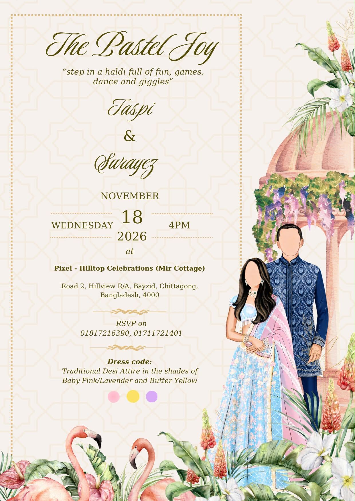

بِسْمِ ٱللَّٰهِ ٱلرَّحْمَٰنِ ٱلرَّحِيمِ
Together with our families
Taspi & Surayez
invite you to celebrate with us
and so it begins…
Chapter I · To begin
Haldi
The Pastel Joy

two days later…
Chapter II · The vows
Wedding
The Wedding Ceremony

What to wear

five days later, in Dhaka…
Chapter III · The celebration
Walima
The Reception

What to wear